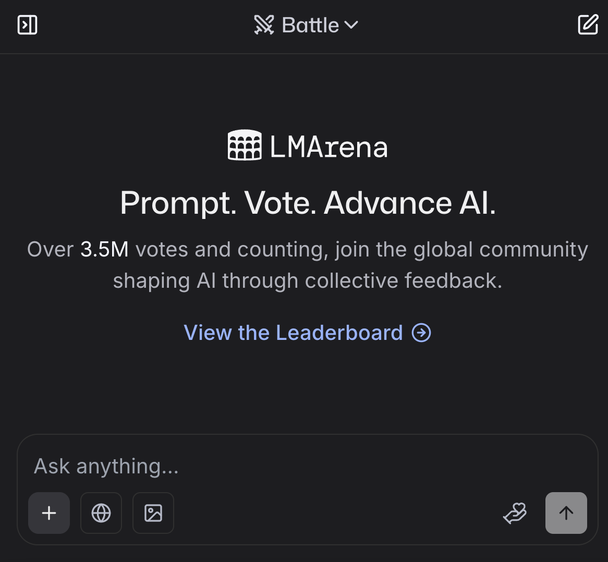

🧙‍♀️ Chapter 3: Other AI tools#
Note: All GenAI tools & models demonstrated below are NOT recommended by UBC due to privacy and safety reasons (but you are NOT restricted from using them)

1. Common large language models & interface#
1.1 Anthropic Claude#
{kind=link}
💡 Disclaimer: I have no connection to Anthropic (the company that makes Claude). I recommend using Claude because many programmers and data scientists from the technology industry agree it’s the best AI tools for programming, writing and explaining things clearly (as of the time when this tutorial is created)! Personally this is my go-to model that drives everyday tasks.
Website: https://claude.ai
✅ Free tier is often enough (Sonnet 4)
📧 Requires login
🆠Best reputation among programmers
🨠Claude Artifact feature
⛑️ Emphasis on AI safety
👠Transparent with system prompt
I’m a strong advocate for more transparency in sharing system promopts used to govern the behaviours of generative AI models. System prompts could encode biases and eliminate certain perspectives in the output of generative AI. Anthropic is one of very few companies that publicly shares their system prompts.
1.2 🔒 Other Proprietary Models#
Google Gemini 2.5 Pro - https://gemini.google.com
xAI Grok 4 - https://grok.x.ai
Mistral Large 2 - https://mistral.ai
And more…
1.3 🔑 Open Source/Open Weight Models#
Meta Llama 4 - https://llama.meta.com
DeepSeek V3.1 MODEL - https://deepseek.com (Note: Model only, not applications)
Kimi K2 - https://kimi.moonshot.cn
And more…

2. What if I want to try them all?#

2.1 Poe (paid)#
{kind=link}
Accessible via both online chatbot interface & PC/laptop software
Online chatbot interface: https://poe.com
Access both open source + proprietary models
Subscription based (Note: $20 limit used up in a few hours…)
2.2 Ollama (free)#
{kind=link}
Accessible via PC/laptop software
Donwload URL: https://ollama.com
Open source/open weight models
Free to use
3. Finding the Best Model for Your Task#
How do I know which model(s) is best for what task?

3.1 Chatbot Arena#
LMArena is a battle field for different large language generative models. Everytime you prompt a question, 2 anonymous AI model will be asked to answer your question, and you will vote which model gave better response. After you give your vote, the system will reveal the models’ names. After millions of pairwise comparisons are made, an Elo-rating algorithm is used to rank the AI models based on people’s preferences.
{kind=link}
Text-to-image arena uses the same logic, but it is a battle field for different text-to-image generative models.
Free to try all models
You can vote and contribute to rankings!
Great for comparing model performance
{kind=link}
4. Using Proprietary Models Economically#
API (Application Programming Interface)
Pay-per-use model
More cost-effective for specific tasks
Programmatic access to models
{kind=link}
5. AI Agents for Coding#
5.1 Cursor: IDE-Based Solutions#
{kind=link}
Cost: $20-200 USD/month
Setup: VS Code + LLM of your choice + tools like MCP (Model Context Protocol)
Features:
Understands your entire codebase & project
Popular among developers and start-up companies
Fast for prototyping
5.1.1 🤖 Real-World Example: Cursor’s Bugbot in Action#
{kind=link}
Personal Experience: I use Cursor’s bugbot feature that automatically checks my newly edited code in Pull Requests (PRs).
🛠Amazing Discovery: The bugbot actually spotted a bug that I did not catch after running 100 tests!
This is a perfect example of how AI can serve as an additional safety net - even when your code passes all tests, AI can still catch logical errors, edge cases, or potential issues that traditional testing might miss.
Key Takeaway: AI tools like bugbot don’t replace good testing practices, but they add an extra layer of code review that can catch what humans and tests miss! 🛡️
5.1.2 🥠Demo: System Prompts + GitHub Pages Tutorial#
Watch the Demo: System Prompt Guided Web Development 📹
In this demo video, I show how to use system prompts to guide Cursor’s AI agent to create a website hosted on GitHub Pages. The demo uses Jupyter Book as a template to create the tutorial page you’re reviewing right now!
This demonstrates the power of combining:
🯠Clear system prompts (you being the guide)
🤖 AI coding assistance (Cursor as your copilot)
🔗 GitHub integration (via GitHub MCP)
5.1.3 âš ï¸ The “Vibe Coding†Reality Check#
On the internet, you can see many people start building cool games/websites without any coding background - they’re just “vibe coding,†talking to Cursor or Claude Code in human language. 💬
The Initial Illusion: 🏃‍♂️💨 From my experience, it could seem like they are running very fast in the first place.
The Reality Wall: 🧱 But if they don’t have the fundamentals, they can hit the wall very quickly too:
AI could get stuck in circles when fixing bugs 🔄
Progress will slow down significantly 🐌
The product will break apart in the long run if you purely depend on vibe coding 💥

🯠You Do NOT Want to Be That Person
No matter which AI agent you will be using in the future, if you take the time to:
Slow down 🐢
Learn the fundamentals 📚
Become an expert yourself ğŸ§
AI tools will shine hundreds of times brighter ✨ when collaborating with you, compared to someone with shaking fundamentals.
5.2 Claude Code: Command Line Solutions#
{kind=link}
Cost: $17-200 USD/month
Status: Currently the best AI agent for coding
Note: Use it for fun
5.3 Other AI Coding Agents (Prices in USD/month)#
5.3.1 VS Code Extensions#
Augment - $50 - https://www.augmentcode.com
GitHub Copilot - Free to start
Cline - Pay by token - cline/cline
5.3.2 IDEs (integrated development environment)#
Amazon Kiro - Free (waitlist) - https://kiro.dev/
Windsurf - $15 - https://windsurf.com/editor
Trae - $3-10 - https://www.trae.ai/
Replit - $20 - https://replit.com
5.3.3 Command Line Tools#
Google Gemini CLI - Mostly free - https://cloud.google.com/gemini/docs/codeassist/gemini-cli
OpenAI Codex CLI - Pay by token - https://openai.com/index/openai-codex/
Cursor CLI - $20-200 - https://cursor.com/cli
6. AI for Reading#
6.1 NotebookLM#
Website: https://notebooklm.google.com
Free to use
Helps with document comprehension and analysis
Upload documents and chat with them
Generate audio overviews and summaries
Below is an example usecase of notebookLM: https://notebooklm.google.com/notebook/16d16956-5cad-47b0-94ba-b33a353eb26c
{kind=link}
7. AI-Based Search Engines#
7.1 Perplexity#
Website: https://www.perplexity.ai
Free tier: 3 questions per day
Pro version: $20 USD/month for unlimited questions
Provides sources and citations for answers
Great for research and fact-checking
Below is an example usecase of perplexity: https://www.perplexity.ai/search/you-are-an-expert-software-eng-RPxbHEJKTzO064CJ86yZOA
{kind=link}
8. Prompt Engineering Tips#
8.1 📠The Power of Note-Taking & System Prompts#
Who loves taking notes, organizing class notes? 🙋‍♀️
🯠The Power of System Prompts
AI can get lost in the woods with too much information it reads all over the internet. System prompts allow the AI agent to focus on solving specific tasks with best practices.
🧠System prompts allow you to be the guide for AI - you become the navigator!
💡 Pro Tip:
When you learn a new concept or workflow, write notes for yourself
But also design system prompts for AI
This highlights the importance of communication skills with humans AND with AI → prompt engineering!
âš ï¸ Always fact-check against textbooks or credible resources - AI can hallucinate!
8.2 Core Techniques#
Ask AI to think step by step - Break down complex problems
Give AI time to think - “Take your time and think carefully before answering”
Use structured formats - Request JSON, numbered lists, or bullet points for answers
Give AI a persona - “You are an expert data scientist with 20 years of experience”
8.3 Best Practices#
Provide clear examples - Show exactly what format or style you want
Ask for explanations - Don’t just get answers, ask about the “why†behind them
Use fun analogies - “Explain MCP using LEGO building blocks”
Ask for alternatives - Get multiple options: “Show me 3 different ways to solve this”
8.4 Communication Tips#
Set clear constraints - “You can only answer in 200 words”
Be polite - Good manners really do help! Say “please†and “thank you”
Be super specific - More details = better answers
Ask questions in JSON format - AI loves structured requests
8.5 Context Management#
Manage context window - Start new chats for big tasks
Avoid overwhelming AI - AI can get overwhelmed with 20+ messages

9. Key Messages#
9.1 👑 Remember you are the boss!#
The key message I want to emphasize is that:
** ⚡️ You want to be the boss of AI, not the other way around.**
AI can only be your copilot, but you are the main pilot who needs to be ready to take over manual control at any time if the plane ✈️ is not flying in the right direction.
Here’s the good news and the bad news:
😱 The bad news: From now on, it’s all up to you. Nobody else can watch over your shoulder all the time.
🉠The good news: It is all UP TO YOU! You have full control of what kind of data scientist you want to be in the next year.
Taking shortcuts might feel like you’re moving fast in the short term 🏃‍♂️, but you could get lost in the woods 🌲🤷‍♀️ and end up at the wrong destination. Learning about the fundamentals will allow you to shine hundreds of times brighter ✨ when you collaborate with AI.
I’m a very heavy user of AI, I try different tools for fun, and integrate AI into every aspect of my workflow. We can learn and explore together, holding each other accountable for collaborating with AI in a responsible way.

9.2 💬✨ Code is cheap, show me the talk.#
The famous quote “Talk is cheap. Show me the code†💻 by Linus Torvalds in 2000 reflected the era when coding was the bottleneck—when having the technical skills to implement ideas was the scarce resource.
But in 2025, with AI as our coding companion 🤖, the paradigm has shifted:
💡 “Code is cheap, show me the talk.”
In the age of AI:
ğŸ Code generation is becoming commoditized - AI can write code from simple prompts
💠Communication and problem-solving skills are now the differentiators
🤔 The ability to articulate problems, requirements, and solutions clearly becomes your superpower
🯠Understanding what to build and why matters more than just knowing how to build it
Your ability to talk through problems, explain concepts, and communicate with both humans and AI will determine your success in the AI era. 🚀
{kind=link}